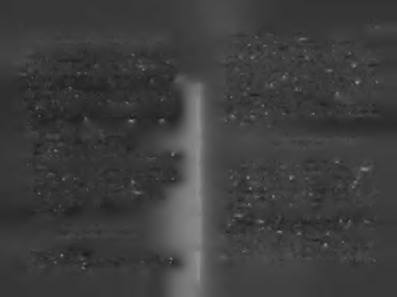

Daha önce yapamayacağını düşündüğü bir şeyi yapabil
Aşağı baktığında gözünün korktuğunu görünce, yuvanın
diğini görmekten, daha önce başaramayacağı söylenilen bir
ortasma gelip oturdu, derin düşüncelere daldı. Gözlerini ka
şeyi başarabildiğini görmekten daha keyifli ne olabilir ki?
patıp kendini uçarken hayal etmeye başladı. Tıpkı rüyaların
İnsanın içi açılır. Genişlediğini hisseder. Büyüdüğünü hisdaki gibi uçuyordu. Rüyalarında hep kendisini uçarken seder.
görürdü. Yuvadan atlayıp uçtuğunda, dev kanatları olduğu
Kabuğunu kırmanın zevki, yeni sınırları aşma isteğini kışkırtı
ortaya çıkardı. Aklından bu düşünceler geçerken, isteği tek
yordu. Ailesinin onu sakladığı dalların altından çıkmıştı ama
rar güçlendi.
ötesini de istiyordu. Özgürlüğün keyfini tatmıştı bir kere.
Ah şu rüyalarımız!
Cesaretin gücünü görmüştü.
Sanılanın aksine rüyalarımız başımıza gelecekleri değil, içi
Ötesinde ne var? Hep bunu merak ediyordu. Bunun öte
mizde olacakları bize söyler.
sinde ne var?
Anne-babasının kendisini altına gizledikleri yapraklara bir tek
R ü y a la rın g e rçe kle ştiğ in i g ö rm e k is tiy o r s a ,
me vurup yuvadan aşağı attı. İki kanadını gere gere yuvada dog ö zle rin i açm alıydı!
laşmaya başladı. Sağa yürüdü, sola yürüdü. Yukarı baktı,
aşağı baktı.
Şahin yavrusu tekrar gözünü açtı. Rüyaların gerçekleşti
Bir süre sonra bundan da sıkıldı. Yuvanın kenarına gelip
ğini görmek istiyorsa, gözlerini açmalıydı! Anne-babası yaaşağı baktı. Dev bir uçurum görünüyordu. Uçmaya kalkarsa, pabiliyorsa, kendisi de yapabilmeliydi.
uçurum onun içini açabilirdi!
Acaba yapabilir miydi? Yapabilecek miydi? Denemeden
Yavrunun yerinde durmaya hiç niyeti yoktu. Yuvanın kebüemezdi!
narına yaklaştı. İkinci sınırı zorlayacaktı. Yapma denileni ya
Düşündü, taşındı, kaşındı.
Kararmı vermişti. Uçacaktı!
pıp saklandığı kovuktan çıktığı için hiç de pişman olmamış
Tekrar yuvanın kenarına geldi.
tı, anne-babası yanılıyordu!
Uçuruma baktı, kanatlarına baktı.
Derin bir nefes aldı...
Güziinii kapatıp kendini uç a rk e n hayal etti!
Gözünü kapattı, kanatlarını açtı...
Ve aniden yuvanın kenarından ileri atılıp kendini boşluğa
Bu defa yuvadan uçmayı düşünüyordu. Hem de kendi kabıraktı.
natlarıyla! Güveniyordu da kendine. Kenara iyice yaklaştı.
Hayatın gözümüzü henüz korkutmadığı çocukluk
Aşağı baktı, içinde bir ürperti hissetti. Geri çekildi. Yoksa korha(ya)llerimizdeki gibi. Neyi yapamayacağını bilememenin kuyor muydu? Korktuğunu düşünmek bile onu kızdırmıştı.
verdiği cesaretin ortaya çıkardığı yapabilme gücü gibi.

23